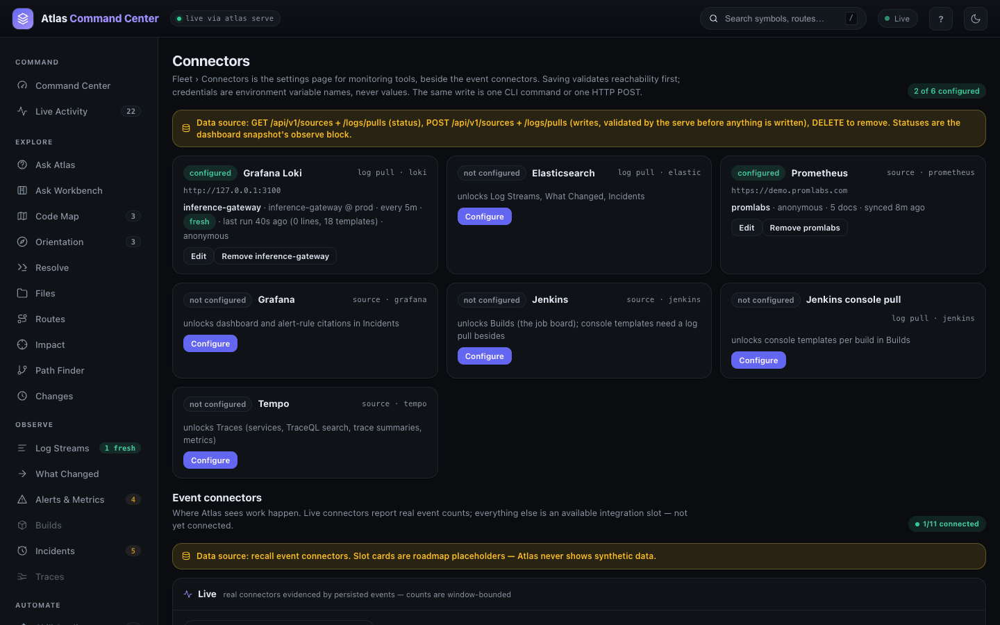
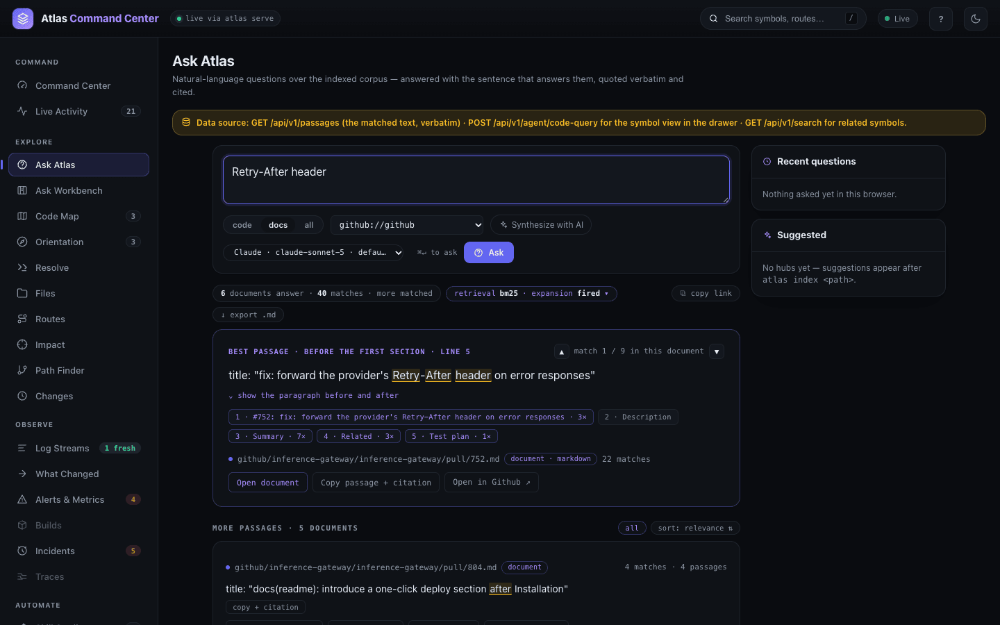
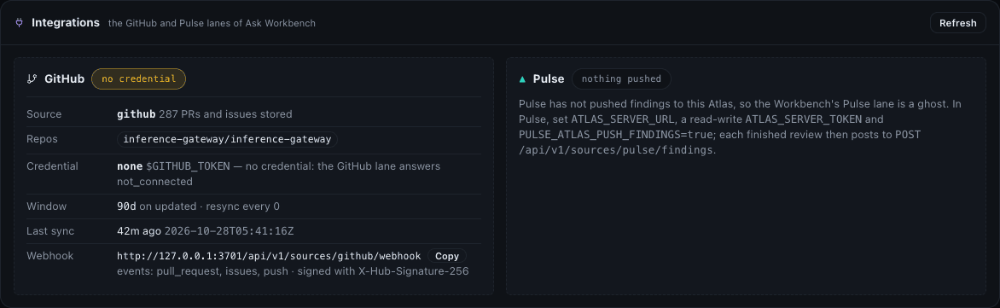
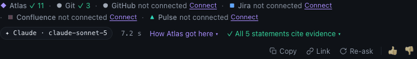
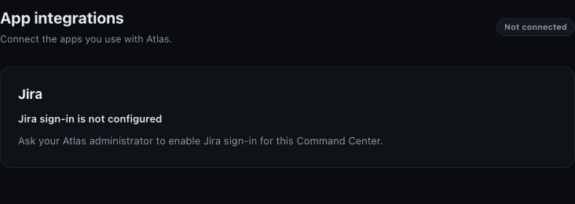

Connected sources
A connected source brings the records around your code — pull requests and issues, tickets, wiki pages, dashboards and alert rules, builds, traces, drive files — into Atlas as a virtual repository. Each record becomes a real file with real line ranges, indexed like code, so a citation into a pull request validates by path and hash exactly the way a citation into a function does. Reach for it when the answer you need is the why behind the code: the ticket that asked for a change, the pull request that made it, the alert that fires on it.
Open It
Sources are added and synced from the CLI. Two dashboard pages show them:
- Connectors in FLEET (
#/connectors) — the monitoring kinds (Prometheus, Grafana, Jenkins, Tempo) beside the log pulls, each with its status and a Configure form. - System → App integrations (
#/system?tab=integrations) — the GitHub and Pulse lanes of the Ask Workbench, and Jira sign-in.

In a terminal, atlas source list shows what is configured and atlas source status what each source has actually synced.
Choose a Kind
Eight kinds are registered. Each turns its records into Markdown documents under its own virtual repository (github://<name>, prometheus://<name>, …):
| Kind | What becomes a document | Credential | Also feeds |
|---|---|---|---|
github | Pull requests and issues of each --repo owner/name, as github/<owner>/<repo>/pull/<n>.md and …/issue/<n>.md | --token-env GITHUB_TOKEN | The Workbench's GitHub lane |
jira | The issues of --project KEY (or a --jql filter) | --email and --token-env; none for a public instance | The Workbench's Jira lane |
confluence | The pages of --space KEY (optionally narrowed with --cql) | --email and --token-env; none for a public instance | The Workbench's Confluence lane |
onedrive | The files of a drive (--drive me), optionally one --folder | A bearer token in --token-env; there is no anonymous tier | — |
grafana | Dashboards and alert rules, as grafana/dashboards/<uid>.md and grafana/alerts/<uid>.md | A Viewer service-account token in --token-env | Dashboard and alert-rule citations in Incidents |
prometheus | Its rules | None, or a bearer for a proxy that demands one | atlas metrics, Alerts & Metrics |
jenkins | Jobs and builds | None where the controller allows it, else --email <user id> and --token-env | atlas builds, Builds |
tempo | The services it saw | None, or a bearer for a proxy | atlas traces, Traces |
Add and Sync a Source
The demo service has one public source: the pull requests and issues of inference-gateway/inference-gateway on GitHub. Adding it validates the connection and writes the configuration; it pulls nothing:
atlas source add github --kind github --repo inference-gateway/inference-gateway --token-env GITHUB_TOKEN --window 90d{
"name": "github",
"kind": "github",
"repos": ["inference-gateway/inference-gateway"],
"token_env": "GITHUB_TOKEN",
"credential_rung": "none",
"credential_reason": "$GITHUB_TOKEN is empty and the gh CLI is not installed",
"window": "90d",
"validated": true,
"validated_by": "connector",
"next": "atlas source sync github"
}Credentials are names. --token-env names an environment variable; the token is read from it at sync time and never stored, so the sources file cannot leak one. Here the variable is set for the one sync command only.
atlas source sync does the work: it pulls everything changed since the stored cursor, writes each record as a file, and indexes the result as a virtual repository:
GITHUB_TOKEN=$(gh auth token) atlas source sync github{
"name": "github",
"repo_full_name": "github://github",
"window": "90d",
"docs_fetched": 287,
"docs_written": 287,
"indexed_files": 287,
"symbols": 1402,
"reconciled": true,
"next_reconcile_at": "2026-11-04T05:45:02Z",
"duration_ms": 228002
}287 pull requests and issues updated in the last 90 days became 287 files in github://github. A sync that finds nothing new is a no-op, not a new snapshot, and a sync that fails part-way resumes from its last checkpoint. atlas source status reports what is held:
atlas source status github{
"name": "github",
"kind": "github",
"token_env": "GITHUB_TOKEN",
"token_present": false,
"credential_rung": "none",
"repo_full_name": "github://github",
"docs": 287,
"window": "90d",
"oldest_updated": "2026-07-31T09:51:54Z",
"newest_updated": "2026-10-27T17:54:30Z",
"last_synced_at": "2026-10-28T05:41:16Z",
"next_reconcile_at": "2026-11-04T05:45:02Z"
}token_present is false because the variable was set only for the sync.
Configure a Monitoring Source from the Dashboard
The monitoring kinds can also be added on Connectors. Configure opens a form: a source name, the base URL and the name of the variable that holds the token. As you type, the card shows the same write two other ways — the CLI command and the HTTP request.
Save & validate has the service reach the URL and check the configuration before anything is written; the result appears in the card. A configured card shows the source's state and offers Edit and Remove. Log pulls and the Observe views are covered in Observe.
Find Pull Requests and Issues in Answers
Once synced, the records answer like code. Search the virtual repository from the CLI:
atlas search --repo github://github --format plain streamingsearch mode lexical total 20
matches 118 (page limit 20)
#578: fix(proxy): relay upstream status and body on streaming /proxy requests section github/inference-gateway/inference-gateway/pull/578.md:24 :: …
#695: [BUG] MCP streaming mode leaks tool_call deltas to the client … section github/inference-gateway/inference-gateway/issue/695.md:15 :: …
#696: fix(mcp): keep agent tool-call chunks off the client stream section github/inference-gateway/inference-gateway/pull/696.md:24 :: …
…On Ask Atlas, choose docs and the github://github repository: the answer quotes the passage verbatim, cites the document by path and line, and offers Open in Github ↗ to the original.

See a Source's State in the Dashboard
System → App integrations → Integrations shows each GitHub source as the service sees it: the repositories it covers, how many records it holds, its credential, its window, the last sync and the webhook address to paste into the repository's settings.

The Credential row is the rung the service is on: env (the variable the source names is set in the service's environment), gh_cli (gh auth token, used only by a service listening on loopback) or none. The service reads the variable from its own environment — for a background service, the environment it was started with, not your shell's. The Ask Workbench's GitHub lane — pull requests, checks and reviews read for a question — needs that credential. On the demo the service was started without it, so the lane reads not connected under every answer, while the synced records stay searchable. Connect leads to this page.

Keep a Source Current
- Rolling window. A Jira or GitHub source pulls only records updated within its window — 180 days unless
--windowsays otherwise — and the same window is the corpus's time-to-live: a record that falls behind it leaves at the next sync. Other kinds are unbounded unless you set one; Prometheus refuses one.atlas source set <name> --window 26wchanges it: widening back-fills exactly the newly covered range, narrowing prunes locally without a request. - Schedule. A running service resyncs its sources every 15 minutes by default (
atlas serve --source-sync-every);--sync-everyon a source overrides it, and0opts that source out. The demo's GitHub source is synced by hand:
atlas source set github --sync-every 0{
"name": "github",
"next": "atlas source sync github",
"sync_every": "0",
"sync_every_effect": "the serve no longer syncs this source on a schedule; its webhook and `atlas source sync` still do"
}- Deletions. A sync removes records the source no longer lists by reconciling its membership every 7 days (
--reconcile-every), or at once withatlas source sync <name> --reconcile.--fullre-pulls everything from the beginning. - Webhooks. A webhook makes a change visible in seconds instead of at the next sync. For Jira,
atlas source webhook <name> --secret-env NAMEprints the setup,--registercreates it through Jira's admin API and--verifywaits for the first delivery. For GitHub, the Integrations card gives the address (/api/v1/sources/<name>/webhook) for thepull_request,issuesandpushevents, signed withX-Hub-Signature-256.
Connect Jira
Jira connects two ways, for two jobs:
- As a source — one project materialized into the corpus with the service's credential, so tickets are searchable, citable and offered to the Workbench's Jira lane. A public instance needs no credential: leave
--emailand--token-envoff. - As sign-in — each person connects their own Atlassian account under System → App integrations → Jira and searches Jira live with their own permissions. The service must be started with
--jira-oauthand theATLAS_JIRA_OAUTH_*settings.
atlas source add jira-ops --kind jira --url https://jira.example.com --project OPS \
--email you@example.com --token-env JIRA_API_TOKEN --window 90d
atlas source sync jira-opsThe demo service has neither, and its Jira card says so:

Remove a Source
atlas source remove github # forget how the corpus was fetched; keep the corpus
atlas source remove github --purge # also delete the materialized filesWithout --purge the files and the indexed snapshots stay, so re-adding the source resumes where it left off. On Connectors, Remove does the same for a monitoring source after a second click to confirm.
From the API
| Route | Does |
|---|---|
GET /api/v1/sources | Every source with its kind, window, credential rung, document count and sync state |
POST /api/v1/sources | Add or replace a source; the service validates it before writing |
DELETE /api/v1/sources/{name} | Remove a source |
POST /api/v1/sources/{name}/webhook | The webhook door a Jira or GitHub delivery posts to |
GET /api/v1/sources/pulse/status | The findings Pulse has pushed |
Writes need the read-write token where a token is set. See Dashboard and API and, for every flag, the CLI reference.
Related
- Ask Workbench — where the GitHub, Jira, Confluence and Pulse lanes answer.
- Search and Ask — searching code and documents together.
- Observe — log pulls, metrics, builds and traces from the monitoring kinds.
- Privacy and data — what a sync stores and where.